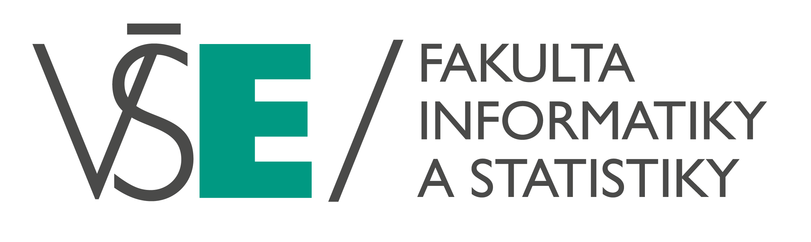

JOJOZ vašeho příběhu vytvoříme data,
ve kterých se dá dohledat.
„Proč v dubnu klesly tržby?“
Vazby sedí, čísla vypadají věrohodně —
ale žádná příčina, žádný důsledek, nic k odhalení.
nálezů sedí se skrytou pravdou, bez falešných stop
živý test, skórováno automaticky
"component": "LineChart", "data": { "@path": "/series" }
Agent posílá popis obrazovky, ne kód. Čísla doplní vždy databáze.